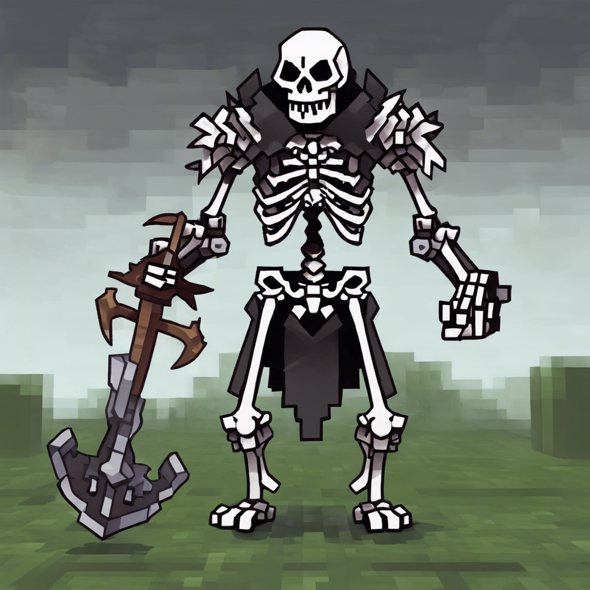

Mikor magadhoz térsz, körülnézel: hatalmas bolthajtásos csarnokban állsz, mélyen a föld alatt. A levegő hűvös, és azon töprengsz, vajon milyen borzalmas vég vár rád. Teljesen egyedül vagy ezen a világon, egyetlen barát nélkül, és fogalmad sincs, milyen ördögi veszélyek leselkedhetnek rád itt, oly távol az otthonodtól. Ablakot nem látsz sehol a teremben, sem természetes fényt, csak a távolban vörösen lángoló, falra erősített fáklyák adnak némi világosságot. A falak nyirkosak a levegő dohos. A csarnok végében két boltíves kijáratot látsz. Mielőtt közelebbről megvizsgálhatnád őket, a fáklyák fénye megremeg és csontig hatoló, dermesztően hideg fuvallat csap meg. A barlang beláthatatlan mélyében valamitől megmozdult a levegő. Fény villan a távolban, és a csarnokon pokoli üvöltés visszhangzik végig. Nincs az az élőlény, amely ilyen rémisztő hangot adna, gondolod, aztán eszedbe jut, hogy még semmit sem tudsz Orb félelmetes lakóiról. Sebesen közeledő lépéseket hallasz, búr még nem látod, ki vagy mi közeleg. Ha kirohansz a hozzád közelebb lévő folyosón - lapozz a 17-re. Ha ott maradsz és kardot rántasz - lapozz a 30-ra.
